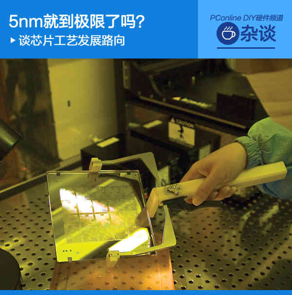
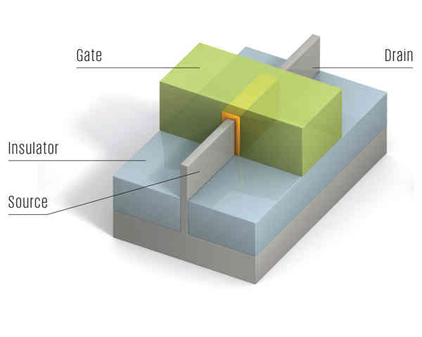
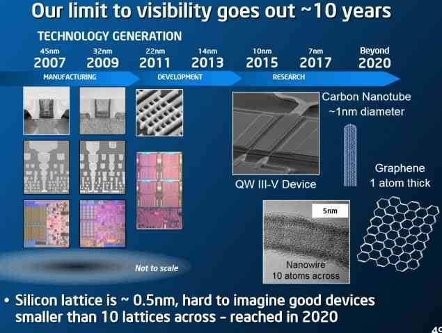
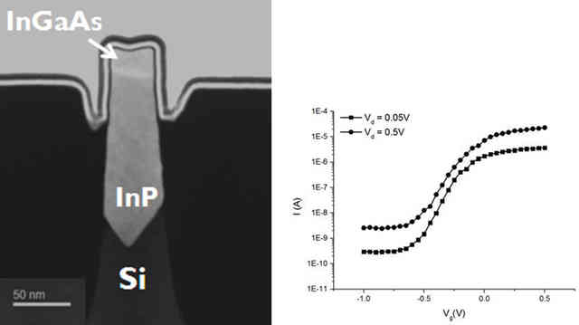
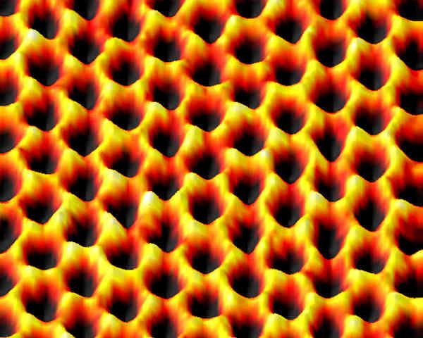
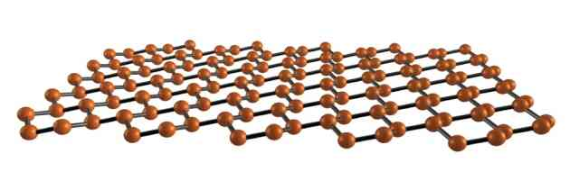
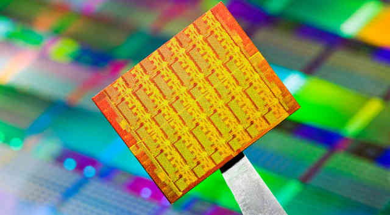

2015-03-05 00:15 BOTA 大字评论(95)
【PConline 杂谈】在上周举行的ISSCC（国际固态电路会议）上，Intel公布了其最新的半导体工艺进展，除了下一代10nm已经处于研发阶段中，也谈到了更加往后的半导体工艺计划。Intel表示摩尔定律即使到达7nm这个节点，仍然会继续有效，但是为了追上摩尔定律的脚步，7nm之后Intel很可能将会放弃传统的硅芯片工艺，而引入新的材料作为替代品。现在看来，10nm有可能将会成为硅芯片工艺的最后一站。事实上，随着硅芯片极限的逐渐逼近，这几年人们也越来越担心摩尔定律是否会最终失效，因为一旦半导体行业停滞不前，对于IT业界来说同样会产生极大的影响。本文就跟大家来谈一下目前半导体工艺的进展情况，以及一旦硅芯片工艺走到尽头，又有什么新的技术方向能够维系半导体工艺的持续发展。

5nm就到极限了吗？谈芯片工艺发展路向
让我们先来大致了解一下芯片是如何工作的。

Source：源极 Gate：栅极 Drain：漏极
一个芯片上整合了数以百万计的晶体管，而晶体管实际上就是一个开关，晶体管能通过影响相互的状态来处理信息。晶体管的栅极控制着电流能否由源极流向漏极。电子流过晶体管在逻辑上为“1”，不流过晶体管为“0”，“1”、“0”分别代表开、关两种状态。在目前的芯片中，连接晶体管源极和漏极的是硅元素。硅之所以被称作半导体，是因为它可以是导体，也可以是绝缘体。晶体管栅极上的电压控制着电流能否通过晶体管。

现有半导体工艺还能走多远？
而为了跟上摩尔定律的节奏，工程师必须不断缩小晶体管的尺寸。但是随着晶体管尺寸的缩小，源极和栅极间的沟道也在不断缩短，当沟道缩短到一定程度的时候，量子隧穿效应就会变得极为容易，换言之，就算是没有加电压，源极和漏极都可以认为是互通的，那么晶体管就失去了本身开关的作用，因此也没法实现逻辑电路。从现在来看，10nm工艺是能够实现的，7nm也有了一定的技术支撑，而5nm则是现有半导体工艺的物理极限。
硅芯片工艺自问世以来，一直遵循摩尔定律迅速发展。但摩尔定律毕竟不是真正的物理定律，而更多是对现象的一种推测或解释，我们也不可能期望半导体工艺可以永远跟随着摩尔定律所说发展下去。但是为了尽可能地延续摩尔定律，科研人员也在想尽办法，比如寻求硅的替代材料，以继续提高芯片的集成度和性能。接下来我们来谈一下几种未来有可能取代硅，成为新的半导体材料方案。
III-V族化合物半导体

III-V族化合物成为FinFET上的鳍片
前文提到Intel可能将会在7nm节点放弃传统的硅芯片工艺，并在未来的几年中启用全新的半导体材料来作为继任者，目前看来，这种新材料很可能会是III-V族化合物半导体。该半导体材料是以III-V化合物取代FinFET上的硅鳍片，与硅相比，由于III-V化合物半导体拥有更大的能隙和更高的电子迁移率，因此新材料可以承受更高的工作温度和运行在更高的频率下。Intel在很早之前已经尝试III-V族化合物（磷化铟和砷化铟镓）与传统晶圆整合的化合物半导体。而在一年多前，IMEC（微电子研究中心，成员包括Intel、IBM、台积电、三星等半导体业界巨头）已经宣布成功在300mm 22nm晶圆上整合磷化铟和砷化铟镓，开发出FinFET化合物半导体。
比起其他替代材料，III-V族化合物半导体没有明显的物理缺陷，而且跟目前的硅芯片工艺相似，很多现有的技术都可以应用到新材料上，因此也被视为在10nm之后继续取代硅的理想材料。目前需要解决的最大问题，恐怕就是如何提高晶圆产量并降低工艺成本了。
石墨烯

电镜下的石墨烯，呈六边形结构
石墨烯被视为是一种梦幻材料，它具有很强的导电性、可弯折、强度高，这些特性可以被应用于各个领域中，甚至具有改变未来世界的潜力，也有不少人把它当成是取代硅，成为未来的半导体材料。但是真正把它应用于半导体领域，还需要克服不少的困难。
首先，通过前面我们可以知道，逻辑电路有“0”和“1”，也就是开和关两种状态，而这就需要有“能隙”——电子携带电流之前必须跃过的能量跨栏。但是因为石墨烯本身的导电性能太好，它没有能隙，也就是只能开，而不能关，这样是不能实现逻辑电路的。如果要利用石墨烯来制造半导体器件，那么我们还需要通过其他手段，在不破坏石墨烯本身特有的属性下，在石墨烯上面植入一个能隙。目前已经有不少针对这方面的研究，但要真正解决这个问题还需要相当长的时间。
而另外一个主要问题就是，要大批量和高质量地获得石墨烯，仍然是一件非常困难的事。目前增加石墨烯产量的手段其实并不少，但石墨烯边缘的六元环并不稳定，容易形成五元环或七元环，通过这些手段获取的石墨烯，往往会是多个畸形环所连成的多晶，从而影响本身的特性，这样生产出来的石墨烯就丧失了作为材料的意义了。
硅烯

具有相似结构的硅烯，可能是比石墨烯更好的方案
我们知道硅和碳具有相似的化学性质，研究人推测硅原子也可以像石墨烯那样，原子呈蜂窝状排列，形成硅烯这种物质。而硅烯相比于石墨烯的重要不同，就是硅烯拥有上述所说，可以实现逻辑电路所必要的能隙。
不过这种结构的硅单质，也只是在2010年才正式观察到，而事实上，在空气中，硅烯具有极强的不稳定性，即使在实验室中，硅烯的保存时间也很短。如果要制作硅烯晶体管，还需要尝试通过添加保护涂层等手段，保证硅烯不会变性，才可能应用于实际当中。虽然硅烯的应用面临着重重困难，但它仍然有希望赶超老大哥石墨烯，成为理想的半导体材料。
结语：

即使硅工艺快将走到尽头，未来仍可能有多种替代方案来接替硅的位置，并使摩尔定律继续延续下去。事实上，硅的替代材料还有多种，如IBM致力研究的碳纳米管等，此外也可以另辟蹊径，在使用现有工艺的情况下来提高单位面积下晶体管的集成数量（比如2.5D、3D堆叠等方案，目前在NAND、DRAM等存储产品中已有不少应用，不过对于IC芯片来说，发热问题不好解决），在未来甚至还可能有光子计算、量子计算等颠覆摩尔定律的超级计算机出现，有机会我们可以再继续展开讨论。但就目前而言，哪种技术能够最终成为计算的未来，谁也无法知晓。